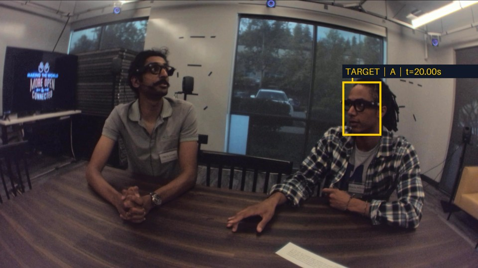

只给身份，不给答案。
三段无声视频、同期六声道混合录音、监听声道和一张目标图。提供通用阵列与音画标定，人物需自己跟踪；不提供转写、登记声样、近讲轨或发言时间表。
POST-PRODUCTION / TARGET DIALOGUE RESCUE
同一个餐桌，几个人同时说话。导演只给一张人物指示图：把这个人的原话、笑声和短应答，从真实现场混合录音中抢救出来。
试听原混合与 Sol 输出 ↗画面指定人物的真实重叠原声抢救 / EasyCom

01 / WATCH, SWITCH, LISTEN
三组均保留完整 60 秒。
切换音轨时保留当前播放位置。
两条包络共用幅度尺度；网页预览未额外归一化或改变增益。MP4 / MP3 为压缩试听副本，正式声音验收读取原交付 WAV。
FIXED REVIEW UNITS
单元来自标注初筛。卡片展示现有自动听审证据的事后取档；“待复核”项使用中点插补，不代表已听审确认。点击卡片可回放，切换原混合继续对照。
02 / THE COMMISSION
三段无声视频、同期六声道混合录音、监听声道和一张目标图。提供通用阵列与音画标定，人物需自己跟踪；不提供转写、登记声样、近讲轨或发言时间表。
短应答、抢话、笑声、吸气和弱辅音都属于目标表演。转头、遮挡与画外发声不能简单删掉；嘴部活动门控也不能代替真正的重叠分离。
交付原长目标 WAV、残余 WAV、同期视频、处理源码和可迁移的 REAPER 工程。目标与残余相加应重组监听原混合，工程默认只播放目标轨。
禁止 TTS、声音克隆、重配音或用另一次发言补缺。允许分离、增强和局部修补；合理的空间音色差异不扣分。不能下载所选记录的公开答案资料。
03 / RESULT WITH EVIDENCE
工程门槛通过，全部分数评价声音。
| 声音维度 | 初评分 | 满分 |
|---|---|---|
| 重叠抢救的联合可用性 | 38.48 | 60 |
| 其他目标发声保留 | 12.00 | 20 |
| 目标停声时的串音控制 | 3.88 | 10 |
| 连续自然性与时间线 | 4.27 | 10 |
现有自动观察提到闷声、笑声断续、元音变化和水下伪影。
自动观察较正面，但漏评全部 8 个停声单元，另有 2 个 P 单元被误读。
现有观察提到他人短语泄漏、辅音损失，末段目标未可靠确认。
A/B/C 各占三分之一。以上为已有 Qwen 证据折算后的初评；各段分数不能作为已经人工确认的质量结论。
正例每单元分别评目标保留 C、干扰抑制 S、原声保真 F，各 0—4 档。联合质量 q = min(C,S,F) / 4。每段内部先平均，再将三段等权汇总。
目标保留率 R = 0.75 × mean(CO/4) + 0.25 × mean(CP/4)。停声控制与连续性乘以各段 R，避免静音因“很干净”获利。
每段：60QO + 20QP + 10R·A + 10R·B
初评沿用已有事后逐段计算口径；原冻结评分文件一并公开。
57 个单元中有 17 个缺少有效听审：9 个 P、8 个 B-N。初分用 2/4 中点插补，并对 C-O07 低置信判断保留额外范围。只改变待判项，总分为 48.2—70.7；这不是置信区间，也不包含评审模型的系统性误听。
Qwen3.8-omni-flash 提供自动质性观察，组织者将已有描述折算为档位。尚无完整人工盲审与仅凭题目输入获得的高质量参考，正式模型总分仍为 null。“案例通过”记录本次收录决定，不表示模型达到满分或交付质量已获认证。
以下为重叠 O 单元等权均值。近讲麦克风用于核对内容和身份，并非阵列端逐样本真值；通道、混响、串音和残余对齐会影响测量。
| 记录 | eSTOI 原混合 | eSTOI Sol | SI-SDR 改善 |
|---|---|---|---|
| A | 0.2652 | 0.3700 | +4.44 dB |
| B | 0.2603 | 0.3907 | +5.75 dB |
| C | 0.4239 | 0.5571 | +7.43 dB |
这些指标支持存在改善，不能证明声音自然、目标始终正确或每个词句均已保留。没有将 eSTOI × 100 作为分数。
完整指标说明 ↗ENGINEERING IS A GATE
迁移目录中 12 条轨道、12 个媒体项、3 个区域；默认仅目标发声。
三条目标和残余 WAV 各 60 秒；数值重组误差在 float 精度内。
核对文件哈希与联网记录，未发现对应答案请求或重配音处理路线。
本轮接口未验证 Sol 原生听音：实际路线为视频帧、模型编写的 DSP 与本地 ASR。原生接口和部分下载通道的限制，不作为案例内容难度的证据。
04 / FILES & PROVENANCE
素材来自 Donley 等人发布的 EasyCom 公开研究数据：在餐厅式研究环境中真实录制的多人谈话，包含自然重叠发声及餐厅噪声播放。后期委托为题目模拟，录制本身不是商业纪录片拍摄。组织者移除原视频左侧人物编号肖像栏，以一张场景图指定目标；未人工叠加人声。
视频为已有 960 × 540 H.264 / AAC 预览；目标、原混合和残余 MP3 在服务器 Docker 从原 WAV 转码，未额外调整增益、降噪或剪辑。完整无损交付、REAPER 工程、题包和隐藏参考保留在服务器。隐藏近讲轨没有加入网页试听。
官方数据集 ↗